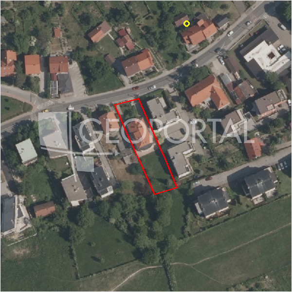

#2623 · Šestine, građevinsko zemljište 1228m2
Šestine, Podsljeme, Grad Zagreb · zemljiste · njuskalo · status active · oglas ↗
Ocjena
- Score
- 57 rule 57 · LLM – · 12.09.2026.
- RLV
- 961.000 € (869 €/m²) · ratio 3,21
- Ukupna investicija
- 3,7 M€
- GBP
- 1.660 m²
- Feedback
- –
- CRM
- –
Oglas
- Cijena
- 299.000 € (243 €/m²)
- Površina
- 1.228 m² · DKP 1.107 m² (odstupanje -9,9 %)
- Prodavatelj
- agencija · UNITED NEKRETNINE
- Prvi put
- 11.09.2026. · zadnje 11.09.2026. · 0 d na tržištu
Povijest cijene
| Datum | Cijena |
|---|---|
| 11.09.2026. | 299.000 € |
Flagovi
zgrade_bez_rusenja zgrade na čestici bez spomena rušenja (−10)zone_uncertainty zona nije pregledana (reviewed: false) (−5)
llm_pending LLM ekstrakcija/ocjena nedostupna
Komponente score-a
| rlv | {'gbp': 1659.855, 'kis': 1.5, 'nkp': 1361.0810999999999, 'noi': None, 'rlv': 961067.5918173915, 'ratio': 3.2142728823324127, 'value': None, 'phases': 1, 'profile': 'zagreb_visestambeno', 'gdv_neto': 5226551.424, 'cost_soft': 109550.43000000001, 'gdv_bruto': 6533189.279999999, 'kis_known': True, 'total_inv': 3704704.055, 'cost_build': 2738760.75, 'cost_other': 539452.875, 'cost_sales': 195995.67839999998, 'demolition': False, 'gbp_source': 'kis', 'rlv_per_m2': 868.5104347826089, 'parcel_area': 1106.57, 'parcelation': False, 'roi_on_cost': 0.357883294027382, 'profit_at_ask': 1325851.6905999994, 'cost_demolition': 0.0, 'total_inv_phase': 3704704.055, 'parcel_area_effective': 1106.57, 'sale_price_per_m2_nkp': 4800.0} |
| hard | [] |
| info | ['llm_pending'] |
| rubric | {'permits': {'max': 5.0, 'detail': {'permit': 'none'}, 'points': 0.0}, 'location': {'max': 15.0, 'detail': {'source': 'benchmark:override:Šestine', 'sale_price_per_m2_nkp': 4800.0}, 'points': 8.75}, 'physical': {'max': 4.0, 'detail': {'slope_pct': 12.67, 'road_access': 'yes', 'slope_points': 1.733}, 'points': 3.73}, 'liquidity': {'max': 3.0, 'detail': {'n_cuts': 0, 'points_cut': 0.0, 'points_days': 0.008333333333333333, 'seller_type': 'agencija', 'points_fresh': 0.5, 'price_cut_pct': None, 'days_on_market': 1, 'points_private': 0}, 'points': 0.51}, 'rlv_ratio': {'max': 25.0, 'detail': {'rlv': 961068, 'ratio': 3.214, 'asking_price': 299000.0}, 'points': 25.0}, 'ticket_fit': {'max': 10.0, 'detail': {'asking_price': 299000.0}, 'points': 7.97}, 'zone_quality': {'max': 8.0, 'detail': {'no_upu': True, 'source': 'gis', 'zone_class': 'mjesovito_pretezito_stambeno', 'zone_ideal': True, 'gp_uredjeni': True}, 'points': 6.0}, 'profit_potential': {'max': 20.0, 'detail': {'roi_on_cost': 0.358, 'profit_at_ask': 1325852}, 'points': 20.0}, 'price_vs_benchmark': {'max': 10.0, 'detail': {'source': 'auto:Podsljeme', 'deviation': -0.522, 'ask_eur_m2': 243, 'benchmark_eur_m2': 160.0}, 'points': 0.0}} |
| weights | {'llm': 0.4, 'rule': 0.6, 'model': 0.0} |
| penalties | {'zone_uncertainty': 5, 'zgrade_bez_rusenja': 10} |
| raw_score | 72,0 |
| rlv_notes | [] |
| flag_notes | {'max_gbp': 1660, 'total_inv': 3704704, 'zone_code': 'M1', 'zone_class': 'mjesovito_pretezito_stambeno', 'zone_source': 'gis', 'zone_reviewed': False, 'commercial_pct': 0.0, 'buildings_share': 0.183, 'commercial_source': 'zone_rule'} |
| caps_applied | [] |
GIS
- Čestica
- k.o. 335258, k.č. 1611 (pin_buffer, 0,80); k.o. 335258, k.č. 1614/1 (pin_buffer, 0,77); k.o. 335258, k.č. 1613/1 (pin_buffer, 0,74)
- Zona
- M1 (mjesovito_pretezito_stambeno) · NIJE pregledana
- kig / kis / katnost
- 0,40 / 1,50 / Po+P+3+Pk
- GP / UPU
- uredjeni · UPU ne
- Pristup / nagib
- yes · 12,7 % (max 16,3 %)
- More
- –
- Zaštite
- Natura ne · zaštićeno ne · kulturno dobro ne
- Zgrade na čestici
- 18 %
- Match
- 0,80
Karta
Ortofoto (DOF)

RLV kalkulacija — pretpostavke
| gbp | {'value': 1659.855, 'source': 'kis'} |
| kis | {'value': 1.5, 'source': 'gis'} |
| soft_pct | {'value': 0.04, 'source': 'profil'} |
| nkp_ratio | {'value': 0.82, 'source': 'profil'} |
| cost_other | {'value': 539452.875, 'source': 'profil: doprinosi+uređenje po m² GBP, financiranje+rezerva % gradnje'} |
| parcel_area | {'value': 1106.57, 'source': 'dkp'} |
| asking_price | {'value': 299000.0, 'source': 'oglas'} |
| margin_on_cost | {'value': 0.15, 'source': 'profil'} |
| build_cost_per_m2_gbp | {'value': 1650.0, 'source': 'profil'} |
| sale_price_per_m2_nkp | {'value': 4800.0, 'source': 'benchmark:override:Šestine'} |
| transfer_tax_and_acquisition | {'value': 0.06, 'source': 'profil'} |
Ekstrakcija iz oglasa
| zone_claim | S |
Benchmarks mikrolokacije
| Vrsta | Vrijednost | n | Od | Izvor |
|---|---|---|---|---|
| newbuild_sale_eur_m2_nkp | 4.800 | – | 12.09.2026. | override |
Opis oglasa
U naselju Šestine, prodaje se građevinsko zemljište površine 1228 m2. Nalazi se u ulici Šestinski vrh. Zemljište je sa strane ceste široko 22 metra, a duljina je 55 metara. Može se graditi jedan objekt od 400 BRP ili dvojni objekt od 600 BRP ili dva samomostojeća objekta svaki od 376 BRP. Sva infrastuktura se nalazi na cesti pokraj parcele. Nalazi se u zoni urbanih pravila 2.2., cijelom površinom unutar stambene zone (S). ID KOD AGENCIJE: 112 Mijo Radovčić Agent s licencom Mob: 0914442909 Tel: +385 99 535 5034 E-mail: mijo@united-nekretnine.hr www.united-nekretnine.hr